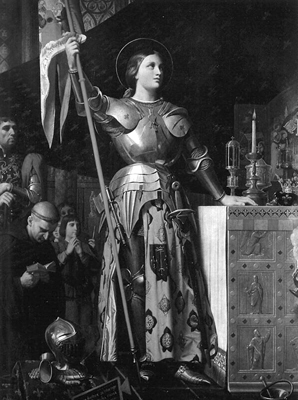
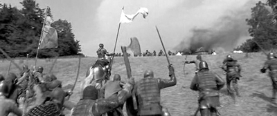
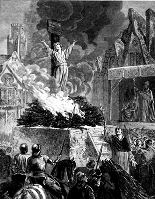

“Sizler! Fransız Krallığı’nda hiçbir hakkı olmayan İngilizler! Göklerin tanrısı, benim, Bakire Jeanne’ın aracılığıyla, siperlerinizden ayrılmanızı ve ülkenize dönmenizi emrediyor. Aksi takdirde öyle bir savaş başlatacağım ki, dünya durdukça hatırlanacak! Bu size üçüncü ve son kez yazışım. Bir daha uyarmayacağım.”
Jeanne d’Arc (Bir çarpışma öncesi
İngiliz komutana yazdığı bir mektuptan)
Kendi hallerinde çiftçi bir aile olan Jacques d’Arc ve Isabelle’in beş çocuğu vardı. Üçüncü çocukları Jeanne (Jan), Fransa’nın taşrasındaki Domremy kasabasında dünyaya gelmişti. Jeanne sıradan bir çocuk olarak kalsa, kırda koyunlarını gütse, zamanı gelince evlenip çok sayıda çocuk yapsa ve dönemin sağlıksız şartlarında yaşayıp genç yaşta, silik bir şekilde bu dünyadan göçüp gitse, siz de bu satırları okuyor olmayacaktınız. Ama olmadı. Sıra dışı bir hayat sürdü. Evet, belki yine oldukça genç yaşta öldü, ama adını, bir ülkenin ulusal sembolü olarak tarihe kazıdı.
Çocukluğunun ilk yılları oldukça sıradandı. Kırlarda babasının sürülerine baktı, annesiyle dini sohbetler yaptı, ev işlerine yardım etti. Her şey olağan görünüyordu. Olağan olmayan tek şey, dine gösterdiği hassasiyetti. Daha genç yaşta ateşli ve oldukça da hassas bir dini duyarlılık geliştirdiği gözlerden kaçmıyordu. Arkadaşları bu durumu, “Tanrı’nın ve Kutsal Meryem’in hizmetkârlığına adamıştı kendini” diyerek nakledeceklerdi.
Jeanne d’Arc’ın çocukluğuna rastlayan dönemde, Fransa oldukça karışıktı. 1415’te İngiltere Kralı V. Henry, Fransız ordusunu Agincort’ta yenerek Fransa’yı işgal etmişti. İngilizlerin bu meşhur zaferi, Fransız soylularını dağıttığı gibi, ülkeyi de zayıf ve başıboş bırakmıştı. Ülkedeki temel çatlak, Dauphinlerle İngilizlerin desteklediği Burgonyalılar arasındaydı.
Halüsinasyonlarla gelen mesajlar
Jeanne d’Arc on iki yaşındayken halüsinasyonlar görmeye başladı. Kendi ifadesine göre, Tanrı Hz. İsa’nın havarileri aracılığıyla kendisiyle konuşuyordu. Bu halüsinasyonlar esnasında parlak bir ışık görüyor ve Aziz Michael ile Azize Catherine de bu ışığa eşlik ediyorlardı. Bu pek de sık rastlanır bir şey değildi. Ya deli ya da büyücüydü Jeanne d’Arc, kim bilir? Ama ne olursa olsun, genç kızda sıra dışı bir şeyler olduğu belliydi. Peki hiç kimseye anlatmadığı bu kendinden geçme seansları esnasında Tanrı’yla ne ‘konuşuyor’du? Tabii ki Fransa’yı. Anlattığına göre Tanrı ondan Fransızları İngiliz boyunduruğundan kurtarmasını ve veliahdı tahta geçirmesini istiyordu. İstemek ne kelime, adeta onu bu işle mükellef kılmış, genç kızın omuzlarına kutsal bir misyon yüklemişti. Zamanla Jeanne d’Arc’ın dini hassasiyeti daha da arttı; günah çıkartmadığı tek bir gün bile yoktu ki, kerli ferli din adamları bile, genç kızdaki bu tutkuya şaşırıp kalıyorlardı.
Jeanne halüsinasyonlarından bir süre hiç kimseye bahsetmedi. Lakin 1428’de aldığı ‘mesajlardan’ biri, artık kendisine ‘dinleyici’ bulmasını söylüyordu. Misyonunu hayata geçirmeye başlayabilirdi. Okuması yazması olmadığı halde, kutsal misyonundan bahsettiği mektuplar yazdırarak, veliaht Kral Charles’a yollamaya başladı...
Ülke perişan bir haldeydi...
Charles de Ponthieu, ya da VII. Charles’ın gerçek bir lider olduğu söylenemezdi. Ülke akıntıya kapılmış bir yaprak gibi sürükleniyor, belirsiz bir istikamete yol alıyordu. Fransız şehirleri İngiliz kuşatması altında inlerken, çaresizlik içinde ne yapacağını düşünen veliaht, yakın adamlarıyla bir şatoya sığınmış, kara kara düşünüyordu. En büyük şehirlerinden biri olan Orleans da düşmek üzereydi. Ne yapabilirdi? Yeterli adamı, silahı ve erzakı yoktu. Üstüne üstlük, deli olduğunu düşündüğü bir kız, sürekli mektup yollayarak kendisini taciz ediyordu: “Tanrı’nın elçisiyim, bana bir ordu verin, ben de size Fransa’yı vereyim!” diyen bu kız da kimdi?

Savaş meydanlarında elinde bayrakla dolaşır,
askerlerini aşka getirmeye çalışırdı.
En sonunda Jeanne’a izin çıktı. Veliahdın huzuruna kabul edilip derdini anlatacaktı. Jeanne atını dört nala Charles’ın şatosuna sürerken, aynı esnada danışmanları ve baş rahibi, Charles’ı, kızın, İngilizler tarafından tutulmuş bir suikastçı, o da olmadı, Tanrı tarafından lanetlenmiş bir şeytan olduğuna ikna etmeye çalışıyorlardı. Evet evet bir şeytan ya da cadı. (Ortaçağ’da binlerce kadının cadı olduğu gerekçesiyle yakıldığını göz önünde bulundurursak, genç kızın aldığı riski anlamak zor olmasa gerek!) Her halükârda Charles’ın kaybedeceği bir şey yoktu. Eğer söylediklerinde samimiyse, 17 yaşındaki bu çiftçi kız, dindarlığı, inanmışlığı ve Fransa’ya olan sevgisiyle, kitleleri ateşlemek için ideal bir aday olabilirdi. Yine de kral adayı korkuyordu.
Kız kendisini hiç görmemişti, öyleyse onu sınayabilirdi. Mademki Tanrı’nın elçisiydi, o halde kalabalık içinde dahi kralın kim olduğunu bulması gerekirdi! Sadık adamlarından birini yerine geçirdi. Jeanne huzura çıktı. Kalabalığın arasına karışmış Charles, meraklı gözlerle kendisini izlerken, Jeanne, veliahdı oynayan sadık adamın yüzüne uzun uzun baktı. Ve titrek bir sesle konuştu:
“Siz iyi birine benziyorsunuz, ama kral değilsiniz. Lütfen, izin verin onunla konuşayım.”
Salondakiler şok olmuştu. Ortalığı hayret nidaları kapladı. Ve Jeanne’ın gözleri, onca kalabalığın içinde, Charles’a odaklandı. Yanına yaklaştı ve yalvaran gözlerle, neden geldiğini anlattı. Charles, ikna olmuştu. Ama etrafındakiler, halen tereddüt içindeydi. Danışmanlarından biri yine ortaya atıldı:
“Bakire olduğunu iddia ediyor, ne bilelim doğru söylediğini?”
Genç kızın sınavları bir türlü bitmiyordu. Charles ile kurmaylarının ve rahiplerin de hazır bulunduğu bir mecliste yapılan muayene ile bakire olduğu anlaşıldı! Lakin bu kez de din adamları, ‘kutsal misyonunu’ sorgulamaya giriştiler. Kendisinden bir mucize sergilemesini istediler. Öyle ya, Tanrı tarafından gönderilen biri ise, bu zor olmasa gerekti. Jeanne’ın cevabı, tüm şüpheleri silecekti.
“Fransızlar boğazlanırken, Tanrı’nın hizmetkârı olduğunu iddia eden sizler, benden numaralar yapmamı istiyorsunuz. Ben genç bir kızım. Kılıç kullanmayı bile bilmiyorum. Buraya gelmek için tek başıma iki bin beş yüz kilometrelik düşman hattından geçmek zorunda kaldım. Bu sizin için yeterli bir işaret değil mi? Bana bir ordu verin, size mucizeyi Orleans’ta göstereyim!”
“Bugün burada çok kan dökülecek...”
Bu sözleri duyan Charles’ın en ufak bir şüphesi kalmamıştı. Genç kıza bir ordunun komutasını vermekte tereddüt etmedi. En deneyimli kumandanlarını, ömründe eline kılıç almamış, savaş görmemiş bu köylü kızının emrine verdi. Genç kızın Tanrı tarafından gönderildiğine duyulan katıksız inanç, Fransız askerlerine büyük bir moral destek sağlıyordu. Elinden hiç düşürmediği sancağıyla bu genç kız, hendekten hendeğe atlıyor, surdan sura koşuyor, bazen ayağına, bazen de omzuna saplanan oklara rağmen durmuyordu. Bunun, savaşan bir ordu için ne kadar büyük bir ateşleyici olduğunu kimse inkâr edemezdi.
Bir yıl geçmemişti ki, Jeanne d’Arc idaresindeki Fransız ordusu, Orleans, Patay ve Troyes’te zaferden zafere koşmaya başladı. Birçok Fransız şehri İngilizlerden kurtarıldı. İlginçtir, tüm bu çarpışmalarda Jeanne hiç kimseyi öldürmemişti! İnançları gereği şiddetten ve öldürmekten uzak durmaya çalışıyor, hatta savaş esnasında, düşmanları İngilizlere karşı aşırı ve gereksiz güç kullanılmasını reddediyordu. Yine tüm bu çarpışmalar boyunca, düşmana karşı ‘nezaketi’ elden bırakmayarak, her çarpışma öncesi yazdığı mektuplarla İngilizleri geri çekilmeleri için uyarıyordu: “Çekilmezseniz, bugün burada çok kan dökülecek. Ama inanın, bu bizim kanımız olmayacak...”

Jeanne d’Arc ve ordusunun zaferleri pek çok filme konu oldu
Yukarıdaki kare de onlardan birinden: The Messenger: The Story of Joan of Arc
Bu zaferlerin ardından Jeanne, veliahdın, VII. Charles olarak taç giymesi gerektiğini belirtmiş ve Charles’ı razı etmişti. Reims katedralinde yapılan taç giydirme törenine birlikte savaştığı kumandanlarla katılmış, bu onurdan kendine düşen payı almıştı.
Böylelikle Charles, 17 Temmuz 1429’daki taç giyme töreniyle o çok beklediği tahtına şatafatlı bir şekilde oturmuş oluyordu. Savaşta gösterdiği destansı gayret ve katkılarından dolayı Jeanne d’Arc ve ailesine asalet unvanları verildi. Genç kız aynı zamanda komuta ettiği askerlerin hayranlığını kazanmış, adeta onların gözünde bir mistik lider, bir azize mertebesine yükselmişti. Çok geçmeden bu durum resmi olarak da tescillenecekti...
Tahta oturan Charles ideallerini unutuyor
Charles tacını giymişti giymesine ama Fransa halen tam bağımsız değildi. Paris, İngilizlerin elindeydi. Jeanne, gözünü Paris’e dikmişti. Ama o da ne? Krallığını sağlama alan Charles’ın havası değişmişti. İngilizleri ülkesinden savaşarak değil, konuşarak çıkarma niyetindeydi. Bu yüzden Paris’i kurtarmaya çalışan Jeanne ve komutanlarına, gereken desteği göndermeyecekti. Genç kız buna çok öfkelenmişti. Neredeyse kralınkini gölgelemeye başlayan etki ve otoritesiyle, Charles’ı, ‘Tanrı’nın isteğini yerine getirmesini engellemekle’ suçlamaya başlamıştı. Ve bir kral için, kim olursa olsun, otoritesini sarsan birinden daha tehlikeli bir şey olamazdı. Muhteris Charles, kendi ordularını zaferden zafere koşturan bu genç azizeyi gözden çıkartmıştı...
Genç savaşçı, bir yıl geçmeden, Burgundian güçleri tarafından yakalanarak İngilizlere satıldı. Kendilerine kök söktüren bu köylü kızı, nihayet İngilizlerin elindeydi. İngilizler, Jeanne d’Arc’ın yargılanmasını bir şova dönüştürerek Fransızlara gözdağı vermek niyetindeydi. Genç kızı, cadılık ve ‘erkek elbiseleri’ giymesinden dolayı kâfirlik(!) suçlamasıyla yargılamaya karar verdiler. Oysa Jeanne d’Arc, emrindeki kumandanlar, bir kızdan emir almaktan rahatsız olunca, saçlarını kesmiş ve onlar gibi zırh kuşanmak durumunda kalmıştı. Bu ‘erkeksi’ tavırları, o dönem Avrupası’nda ‘kâfirlikle’ suçlanması için yetiyor da artıyordu bile. Aslında tüm bu iddialar ve mahkeme, bir düzmeceden, İngilizlerin ‘hâkim güç biziz’ gösterisinden başka bir şey değildi. Bu orkestranın başında da İngilizlerin Fransa’daki sadık adamı olan ve Fransız ulusal kimliğini canlandırdığı için Jeanne d’Arc’a büyük bir kin besleyen Piskopos Pierre Cauchon vardı. Pierre Cauchon, makamını korumak için, okuma yazma bilmeyen Jeanne’a ‘kâfir’ olduğunu deklare eden bir belge imzalatmaktan kaçınmamıştı. Bunu kabul etmekle ömür boyu hapis cezası alan Jeanne’a hapiste de psikolojik baskı yapıldı.
Fransız din adamlarının kızcağızı ömür boyu hapse mahkûm etmesi, İngilizleri tatmin etmemişti. Bir şekilde kızın ortadan kaldırılmasını istiyorlardı. Hapishanede Jeanne’a bir komplo düzenleyerek, tekrar ‘erkek’ elbiseleri giymesini sağladılar. Kilise mahkemesi bu durumu ‘kâfirliğin’ devamı şeklinde yorumlayarak, Jeanne’ın yakılarak idam edilmesine karar verdi. Jeanne d’Arc, 30 Mayıs 1431’de Rouen meydanında bir kazığa bağlanarak yakıldı ve külleri Seine nehrine savruldu. Aktarılanlara göre Jeanne’ın öldürülmesini izlemek için 10 bin kişi toplanmıştı. Yine anlatılan efsanelerden birine göre, ateşin yakamadığı tek şey, kalbi olmuştu. Ve ilginçtir, uğruna ömrünü harcadığı kral, kendisini tahta çıkartan bu sıra dışı kız diri diri yakılırken, parmağını bile kıpırdatmamıştı.

Jeanne d’Arc’ın yakılışını tasvir eden bir çalışma. İddialara göre kendisinden geriye
hiçbir parça kalmasın diye bedenini peş peşe iki kez yakmışlardı.
Yoksa bir efsane miydi?
Şu ana kadar anlatılanlar, Jeanne d’Arc gerçeğinin bilinen ya da gerçek olduğuna inanılarak nesillerden nesillere aktarılan kısmıydı. Lakin bir de madalyonun diğer yüzü var: Kimilerine göre asırlardır anlatılan Jeanne d’Arc öyküleri, sadece bir efsane! Benzerlerini ulus devlet sürecinden geçen diğer ülkelerde de gördüğümüz onlarca ‘birlik beraberlik’ manivelasından biri. Bunu iddia edense, Fransız gazeteciler Marcel Gay ve Roger Senzig. İkili, Jeanne d’Arc olgusunu neredeyse on yıl araştırdıktan sonra kaleme aldıkları ‘L’Affaire Jeanne d’Arc’ (Jeanne d’Arc Davası) isimli eserlerinde, yüzyıllar boyunca Fransa’nın sembolü olan ve ülkeyi kurtarmak için Tanrı tarafından görevlendirildiğine inanılan güzel çoban Jeanne d’Arc ile ilgili rivayetlerin, İngilizler karşısında zor durumda bulunan Fransız sarayı tarafından uydurulduğunu ve halka moral vermek için ‘psikolojik silah’ olarak kullanıldığını ileri sürüyorlar.
Fransız kahramanın isminin aslında Jeanne d’Arc değil, Jeanne d’Orleans olduğunu iddia eden ikili, genç kızdan kaldığı söylenen 19 mektuptan 5’ini incelemiş, 3 tanesi üzerinde genç kızın kendi imzası olan bu mektupların hiçbirinde d’Arc isminin geçmediğini ortaya çıkarmıştı. İkili bununla da kalmadı, genç kızın basit bir çoban olmadığını öne sürdü. Buna göre Jeanne d’Arc, yargılanması esnasında “hiçbir zaman koyun veya başka bir hayvan gütmediğini” söylemişti. Üstelik çok iyi ata biniyor ve saray Fransızcası konuşuyordu.
Yazarlar, kahramanın ölüm tarihiyle ilgili olarak da ‘resmi görüşten’ farklı bir tablo çiziyor. 1431’de öldürüldü diye bilinen Jeanne’ın, bu tarihten sonra Fransa’nın Metz, Belçika’nın Arlon, Almanya’nın Köln ve hatta 1436’da Fransa’nın Orleans kentlerinde görüldüğüne dair yüzlerce belgenin varlığına dikkat çeken ikili, Jeanne d’Arc hadisesinin bir manipülasyon olduğu sonucuna varıyor. “15. yüzyılda aynı bugünkü gibi kamuoyu manipüle ediliyordu, bu bir gizli diplomasiydi. Efsane güzel, ama gerçek daha güzel” diyen Marcel Gay, İngilizlere karşı zor durumda bulunan Fransız kraliyetinin, asıl adı Jeanne d’Orleans olan bu vatansever kızdan, bir Jeanne d’Arc efsanesini üreterek, bunu ‘psikolojik silah’ olarak kullandığını iddia ediyor.
Jeanne’ın ölümünden 26 yıl sonra İngilizler nihayet Fransa’dan sürüldü ve gıyabında yapılan yeni bir mahkemede aklanan Jeanne d’Arc, 1920’de kutsanarak azize ilan edildi. Ve o tarihten bu yana Fransa’nın koruyucu azizesi olarak anılan, 19 yıllık ömrüne büyük bir dini bağlılık, adanmışlık ve cesur bir ruh sığdıran Jeanne d’Arc, hakkında anlatılanların tümünün efsane ya da gerçek olması bir yana, Fransa’nın önde gelen kurucu sembollerinden biri olmayı sürdürüyor...
NOTLAR